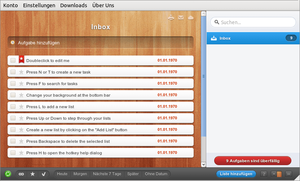

Wunderlist
Archivierte Anleitung
Dieser Artikel wurde archiviert, da er - oder Teile daraus - nur noch unter einer älteren Ubuntu-Version nutzbar ist. Diese Anleitung wird vom Wiki-Team weder auf Richtigkeit überprüft noch anderweitig gepflegt. Zusätzlich wurde der Artikel für weitere Änderungen gesperrt.
Anmerkung: Die erste Programmversion wird vom Hersteller nicht mehr unterstützt und Wunderlist 2 ist nicht mehr für Linux verfügbar. Die neue Version ist unter Linux aber noch als Erweiterung  für Chromium einsetzbar.
für Chromium einsetzbar.
Zum Verständnis dieses Artikels sind folgende Seiten hilfreich:
 Wunderlist
Wunderlist  ist ein einfaches Programm zur Aufgabenverwaltung im Todo-Listen-Stil. Es ist quelloffen, kostenlos und wird vom Berliner Softwarehersteller 6wunderkinder entwickelt. Wunderlist gibt es neben der Linux-Version auch für Mac OS X, Windows, iPad, iPhone, Android und als Webanwendung. Der Hersteller bietet auch eine kommerzielle Online-Synchronisation der Daten an, so dass man Aufgabenlisten bequem auf mehreren Geräten führen kann.
ist ein einfaches Programm zur Aufgabenverwaltung im Todo-Listen-Stil. Es ist quelloffen, kostenlos und wird vom Berliner Softwarehersteller 6wunderkinder entwickelt. Wunderlist gibt es neben der Linux-Version auch für Mac OS X, Windows, iPad, iPhone, Android und als Webanwendung. Der Hersteller bietet auch eine kommerzielle Online-Synchronisation der Daten an, so dass man Aufgabenlisten bequem auf mehreren Geräten führen kann.

Installation¶
Das Programm befindet sich nicht in den offiziellen Paketquellen, kann aber unter Ubuntu 11.04 über das Software-Center installiert werden: Wunderlist . Falls man Wunderlist manuell installiert hat, sollte man es vorher zuerst wieder entfernen.
Manuell¶
Bei einer neueren Ubuntu-Version muss man Wunderlist manuell installieren. Zuerst muss man sich das Programm von der Herstellerseite herunterladen (circa 85 MiB). Es gibt sowohl eine 32-Bit und eine 64-Bit Version. Nach dem Herunterladen muss man die Datei entpacken [1] und in ein passendes Verzeichnis kopieren.
Als Verzeichnis bietet sich /opt/ [2] an. Dazu öffnet man ein Terminal und wechselt in das Download Verzeichnis, in das man die Datei heruntergeladen hat. Hier im Beispiel ist das der Ordner Downloads im eigenen Homeverzeichnis. Da in diesem Beispiel das Programm im Verzeichnis /opt/ installiert werden soll, werden Root-Rechte [3] benötigt. Folgende Befehle müssen im Terminal [4] eingegeben werden:
cd ~/Downloads # in den Download-Ordner wechseln sudo tar -xzf wunderlist*.tgz -C /opt/ # entpacken und nach /opt/ verschieben sudo mv /opt/Wunderlist-* /opt/wunderlist # Ordner in wunderlist umbenennen sudo chown root:root -R /opt/wunderlist # den Benutzer in root ändern
Für Ubuntu 11.10 und 12.04 wird ein Skript angeboten, das bei der Installation hilft und sich auch um notwendige Abhängigkeiten kümmert.
Menü-Eintrag erstellen¶
Damit Wunderlist auch im Menü erscheint, muss man noch eine so genannte .desktop-Datei [5] im Verzeichnis /usr/share/applications/ anlegen und bearbeiten. Dazu wird ein Editor [6] mit Root-Rechten [4] geöffnet. Wenn - wie im Beispiel oben - das Programm in den Ordner /opt/wunderlist/ kopiert worden ist, kann man einfach folgende Zeilen in den Editor kopieren und als /usr/share/applications/wunderlist.desktop speichern:
1 2 3 4 5 6 7 8 9 10 11 12 13 14 15 | [Desktop Entry] Type=Application Name=Wunderlist Name[de]=Wunderlist GenericName=Task Management Tool GenericName[de]=Aufgabenverwaltung Comment=Organize your life with Wunderlist Comment[de]=Organisiere dein Leben mit Wunderlist Icon=/opt/wunderlist/Resources/wunderlist.png Exec=/opt/wunderlist/Wunderlist Categories=Office;ProjectManagement; Terminal=false StartupNotify=true X-MB-SingleInstance=true X-Ubuntu-Gettext-Domain=tasks |
Das Programm kann nun über den Eintrag "Anwendungen -> Büro -> Wunderlist" gestartet werden.
Bedienung¶
Im Fenstermenü kann man unter "Einstellungen -> Sprache" die Oberfläche von Wunderlist auf deutsch umstellen. Unter "Konto" kann man sich ein Benutzerkonto anlegen, damit die Aufgaben und Listen zwischen verschiedenen Geräten automatisch online synchronisiert werden. Die Bedienung selbst ist ziemlich selbsterklärend. Listen legt man mit "Liste hinzufügen" an und Aufgaben werden einfach bei "Aufgabe hinzufügen" eingetippt. Listen und Aufgaben können einfach per Drag'n'Drop verschoben werden. Unten befinden sich neben dem "Synchronisieren" Knopf auch Schaltflächen für die listenübergreifende Anzeige von allen, favorisierten und erledigten Aufgaben. Ganz rechts ist das ? -Symbol, mit dem man sich Tastaturkürzel anzeigen lassen kann.
Links¶
Wunderlist Installation unter Ubuntu 11.10
- Blogbeitrag 11/2011Wunderlist in Ubuntu 11.04 und 10.10 über das Software-Center verfügbar
- Blogbeitrag 10/2011Wunderlist ordentlich unter Linux installieren
- Blogbeitrag 09/2011
- Erstellt mit Inyoka
-
 2004 – 2017 ubuntuusers.de • Einige Rechte vorbehalten
2004 – 2017 ubuntuusers.de • Einige Rechte vorbehalten
Lizenz • Kontakt • Datenschutz • Impressum • Serverstatus -
Serverhousing gespendet von